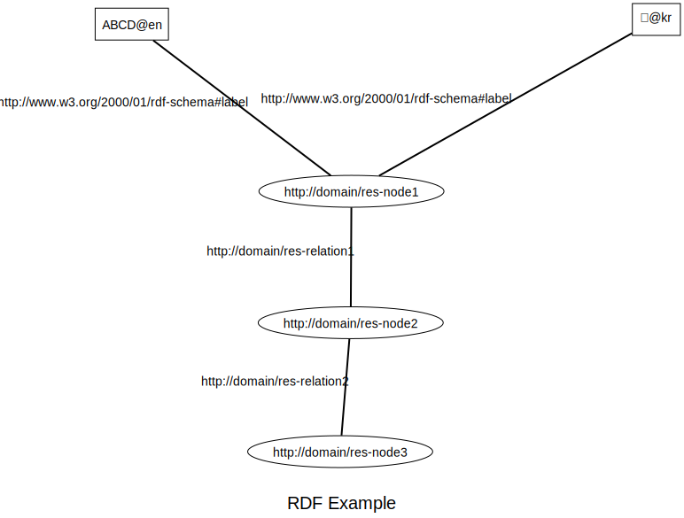
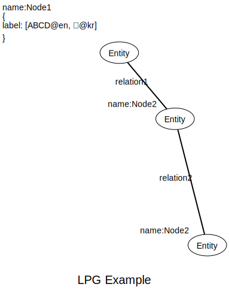

Knowledge Graph 는 정보(information)의 상위 개념으로서의 지식(knowledge)을 그래프 데이터 구조로 표현한 것으로 의미론적 처리(semantic processing)를 위한 데이터베이스로 활용이 가능하다. 복수의 관점에서 특정 개념을 엔티티와 다른 엔티티들과의 관계를 나타낼 수 있다. 그래프 데이터 구조의 특성을 이용하여 여러 방식의 순회를 통해 의미론적 처리를 프로그램으로 작성할 수 있다.
| 정의 | 출처 |
|---|---|
| “A knowledge graph (i) mainly describes real world entities and their interrelations, organized in a graph, (ii) defines possible classes and relations of entities in a schema, (iii) allows for potentially interrelating arbitrary entities with each other and (iv) covers various topical domains.” | Paulheim |
| “Knowledge graphs are large networks of entities, their semantic types, properties, and relationships between entities.” | Journal of Web Semantics |
| “Knowledge graphs could be envisaged as a network of all kind things which are relevant to a specific domain or to an organization. They are not limited to abstract concepts and relations but can also contain instances of things like documents and datasets.” | Semantic Web Company |
| “We define a Knowledge Graph as an RDF graph. An RDF graph consists of a set of RDF triples where each RDF triple (s, p, o) is an ordered set of the following RDF terms: a subject s ∈ U ∪ B, a predicate p ∈ U, and an object U ∪ B ∪ L. An RDF term is either a URI u ∈ U, a blank node b ∈ B, or a literal l ∈ L.” | F¨arber et al. |
| “... systems exist, ..., which use a variety of techniques to extract new knowledge, in the form of facts, from the web. These facts are interrelated, and hence, recently this extracted knowledge has been referred to as a knowledge graph.” | Pujara et al. |
위 표와 같이 지식 그래프에 대한 정의는 업계나 학계에서 아직 논의 중이라고 할 수 있다. [1] 본 과제에서 도입하고자 하는 주요 개념은 지식 그래프 혹은 온톨로지의 일반론적인 범위가 아니다. 의미론적 처리가 가능한, '지식'이라는 개념을 소프트웨어를 통해서 처리할 수 있는, 시스템을 구축하기 위한 데이터베이스라는 관점에서 전체 시스템의 구성 요소 중 하나이다. 또한 현실 세계의 지식 전체를 대상으로 하는 것이 아니라 주어진 데이터 세트를 지식 그래프를 통해서 표현하고, 소프트웨어 프로그램으로 처리될 수 있도록 만드는 것으로 한정 된다. 때문에 본 과제에서 구축 될 지식 그래프는 외부의 지식 베이스 혹은 지식 관리 시스템 등에서 주어진 데이터 세트에서 식별된 엔티티에 관한 부분들을 취합해 놓은 형태이다.
자율주행 빅데이터 시스템에서 지식 그래프의 주 활용 목적은 데이터 세트를 설명할 수 있는 메타데이터에 대한 처리이다. 서로 다른 데이터 세트에서 사용하고 있는 용어 사이의 관계를 추론하여 데이터 탐색 결과에 반영 하거나, 데이터 카탈로그를 의미론적 처리로 확장하여 지식 카탈로그를 구축하고 데이터 세트의 활용도를 높이고 데이터 탐색의 정확도를 향상시킬 수 있다.
자율주행 빅데이터 시스템에서는 지식 그래프를 계층 구조로 구축하여 각 데이터 세트 고유의 메타데이터와 전체 도메인 영역이나 일반적인 영역에서 식별될 수 있는 엔티티를 구분하여 구축한다. 계층에 대한 구분은 데이터 스키마 상의 Lable 을 이용하며, 논리적으로는 복수의 관계 정의를 통해서 통합된다. 이러한 계층 구조를 통해서 각각의 데이터 세트는 고유의 맥락 내에서의 로컬 지식 그래프에 특징을 충분히 표현 하면서도 전체 시트템의 복잡도를 증가시키지 않을 수 있다. 또한 글로벌 지식 그래프는 각 데이터 세트의 도메인이나 배경 정보 등을 고려하여 높은 정확도와 함께 다른 데이터 세트와의 관련성을 유추할 수 있다.
그래프 데이터 구조는 기본적으로 노드(Node, Entity)와 엣지(Edge, Relationship) 그리고 라벨(Label)로 구성된다. 상용 및 오픈소스 기반의 다양한 데이터베이스는 이러한 기본적인 구성을 지원 하면서도 사용 목적에 부합하면서 성능과 사용성을 향상시키기 위한 방법들을 포함한다. 그래프 데이터 모델 중 대표적으로 RDF(Resource Description Framework) Triple Stores 와 LPF(Labeled Property Graphs) 가 있다. 데이터베이스들은 이 두 모델의 특성을 모두 지원하거나, 두 모델을 지원 하면서도 특성을 제한적으로 지원하거나, 둘 중 한쪽의 특성을 우선적으로 지원한다. 기본적인 그래프 데이터 구조를 벗어나는 범위는 아니기 때문에 어떤 모델이든 그래프를 지원하는 데이터베이스에 구현은 가능하다. 다만 전용 쿼리 언어의 지원 등에 따라 사용성과 성능에 대한 차이점은 발생한다.
결론적으로 자율주행 빅데이터 플랫폼에서 그래프 모델은 LPG 를 기본으로 하며, 구성되는 데이터베이스의 선택에서도 이러한 기술적 지원을 우선으로 고려한다. 아래 내용을 통해서 이러한 설계 관점에서의 결정에 대해 설명한다.
RDF 는 "시맨틱 웹"과 관련이 있다. 구조화된 메타데이터를 통해 잘 정의된 데이터로, 이러한 데이터들을 통해서 웹의 개별적인 참여자들이 의미론적 처리가 가능한 소프트웨어를 재생성하는 (널리 보급된) 웹의 차세대 생태계를 가속화 하는 아이디어 중 일부이다. RDF는 그래프 데이터 구조를 기본으로 하면서 체계적으로 구조화된 메타데이터를 어떻게 표현할지에 대한 명세를 포함한다.
RDF 에서 핵심적인 개념 중 하나는, RDF에서 subject-predicate-object 형태의 triple 을 기본 구조를 갖는데 각 요소의 ID 가 웹에서 리소스의 식별자인 URI 라는 것이다. RDF 에서 각 요소들은 내부적으로 어떤 데이터를 포함하지 않으며 고유의 URI 만 갖는다. URI 가 부여된 리소스들은 자체적으로 구조화된 메타데이터를 포함한 데이터를 제공한다.
RDF 모델에서 각 노드와 엣지가 자체적인 데이터 구조를 갖지 않는다는 것은, LPG(Labeled Property Graphs) 와 비교하면 이해하는데 도움이 된다. 또한 이러한 특징이 구축된 그래프 구조의 데이터들을 사용하는 방식이나 성능에 영향을 미칠 수 있다는 것도 알 수 있다.

RDF가 리소스와 다른 리소스 사이의 연결에 중점을 두고 있다면, LPG 는 데이터의 보관과 질의에 초점을 맞춘다. LPG Model에서 각각의 노드와 엣지(Relationship)는 자체 시스템 내부에서 고유한 식별자를 가지며, 자체적인 데이터 구조를 포함할 수 있다. 자체 데이터 구조는 Key-Value 쌍 형태의 데이터로 노드 혹은 엣지의 특성을 표현하는 프로퍼티(Properties)이다. LPG 모델의 이러한 특성은 URI 를 통해 특정 리소스를 참조하여 데이터들을 확인할 수 있는 RDF 모델과 비교하면 데이터를 자체 구조 내에서 관리할 수 있고, 이를 이용해서 다양한 쿼리 유형은 지원할 수 있도록 한다. 또한, (LPG 모델을 지원하는 데이터베이스에 따라 차이가 있을 수 있지만) 필요한 정보들을 프로퍼티 형태로 관리 할 것인지 별도의 노드와 엣지를 이용해서 표현할 것인지에 따라서 데이터베이스 내부적으로 관리하는 인덱스의 용량과 쿼리 응답을 위한 프로세싱을 효율화 할 수도 있다.

글로벌 지식 그래프(Global Knowledge Graph)는 일반적인 수준의 지식을 나타내기 위한 Entity 와 Relationship 을 포함한다. 글로벌 지식 그래프의 엔티티들은 Label 을 이용해서 로컬 지식그래프의 Entity 와 구분된다. 특정 데이터 세트의 범위로 한정되는 로컬 지식그래프의 Entities 는 글로벌 지식 그래프의 Entities 와의 연결될 수 있고, 이를 통해서 서로 다른 데이터 세트 사이의 유사 관계를 질의할 수 있다.